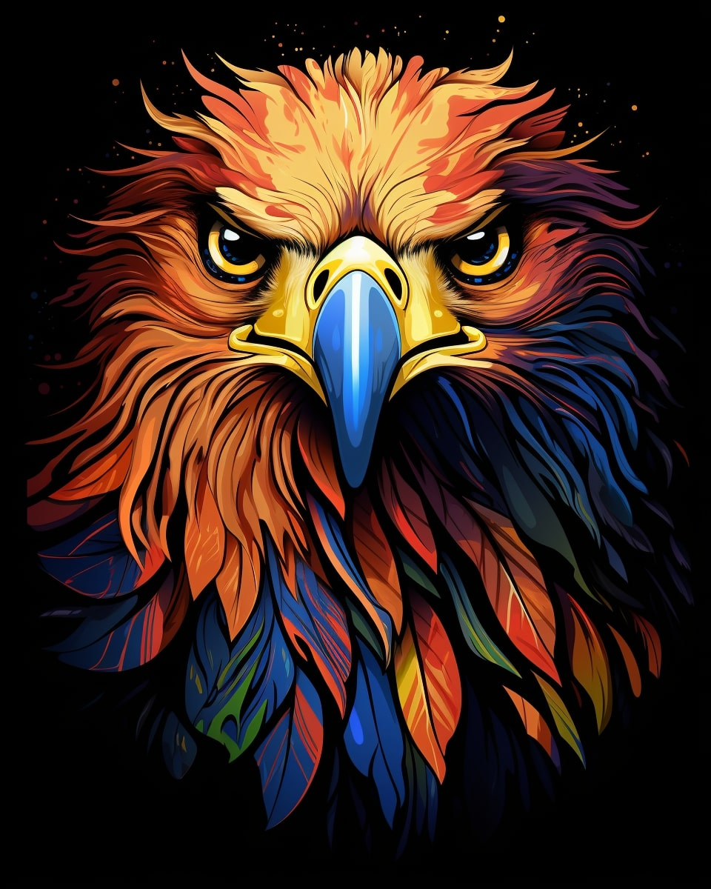

Awards and Honors
- Outstanding IT Professional CSI Member Award
- Conferred by the Computer Society of India, Hyderabad Chapter , June 2025
- Meritorius Students' Award
- Conferred by the Raid Laban Societal and Cultural Society , 2024
- Meritorius Students' Award
- Conferred by the Raid Laban Societal and Cultural Society , 2022
- Bengali Meritorius Students' Award
- Conferred by the Shillong Sreehatta Sammelan, 2022
- Highest Marks in the Board Examination (SSLC) 2022 in Computer Science
- Secured the highest marks among all the students in the board
- Co-authored an Anthology, "Dance with Dusk", by Manda Publishers and House of Publishing publishing house
- Featured in a literary program "Connecting with Young Minds" along with my 2 college-mates in Door Darshan Meghalaya
- Won the 2nd Runner Up position in the Inter College Quiz Competition organised by Sankar Dev college, and the government of Meghalaya.
- Featured in an inspiration interview for children and young students as a role-model in Purvuttar-Seva , Akashvani, {North Eastern Service , All India Radio}
- Featured in Shillong Times for being conferred the award by Computer Society of India
- Authored an Antholgy "Crimson Tales: 30 verses of August" with Bookleaf publishing house
- Ranked at 149th place in national poetry contest 23rd edition organised by S7 organisation
Kindly visit my LinkedIn profile for details on the awards and honours